Documentation of
CausalTrails
Graphical User Interface
CausalTrail is a tool for causal hypotheses testing. It allows the formulation of three types of queries:
The graphical user interface is intended to simplify the usage of our tool. This documentation introduces our graphical user interface and details how it can be used.
The following description is valid for linux systems only. We use cmake to build CausalTrail. There are two prerequisites that must be fulfilled to build our tool:
To build CausalTrail, execute the following steps:
The executable of the gui is located in the folder build/gui, the consol version is located in the folder build/core, and tests can be found in the folder build/test.
CausalTrail supports the following network formats:
The Trivial Graph Format (TGF) has the following structure:
| NodeID NodeAttribute |
| ... |
| # |
| NodeID NodeID EdgeAttribute |
| ... |
The upper part of a TGF file, contains the mapping between node identifiers and at most one optional attribute, e.g. node names. The # marks the beginning of the actual network definition. Edges are directed from the first to the second node identifier. An edge between two nodes can be mapped to at most one optional attribute.
Node Attribute files (NA) have the following structure:
| AttributeName (class = Type) |
| NodeID = NodeAttribute |
| ... |
Different node attribute classes can be referenced via the AttributeName. Type states the data type of the node attributes in terms of a Java class. The mapping of NodeID to NodeAttribute has to be unique within one class of attributes.
The Simple Interaction Format (SIF) has the following structure:
| ... |
| NodeID EdgeType NodeID |
| ... |
Nodes in the network are identified via the NodeID. Therefore they have to be unique. The left NodeID represents the source of an edge, the right one represents the target. It is possible to assign more than one target node to a single source node, so multiple edges can be encoded in one line. The Edge Type encodes the type of an edge, e.g. whether an edge between two nodes is directed or not. It is also common to encode biological meaning in the Edge Type. For example, pd represents Protein-DNA interactions, whereas pp represents Protein-Protein interactions. The Edge Type can also be longer string. This allows the encoding of more complex descriptions, e.g. activates, inactivates, or phosphorylates. If it is not necessary to encode any specific meaning for an edge, xx or yy can be used as an Edge Type.
The discretisation control file is a regular text file. Its rows are tab-delimited and structured as follows:
RowIndex DiscretisationMethod OptionalValue
The RowIndex is the number of the row in the sample file upon which the specified
discretisation method should be applied.
The DiscretisationMethod is an integer coding for one of the discretisation
methods included in CausalTrail. The coding obeys the following system:
The OptionalValue needs to be specified for methods 6 and 7. Using our GUI, the discretisation control file can be created interactively.
Starting CausalTrail causes the programme to search for a configuration file, containing the path to the data of the user. If such a file could not be found, the user is asked to specify the path to the data. This is shown in Figure 1.
The entered path is automatically saved into a configuration file for later usage.
The initial layout of CausalTrails GUI is shown in Figure 2. At the bottom of the
window, there is a dock widget containing general information on the current
session, labelled Log. At the top, there is a menu bar and a toolbar allowing
direct access to the most important actions. At this stage, it is possible
either to load a new network or to load a previously stored session. Loading
networks is covered in Section 4.1, loading sessions is covered in Section 4.3.
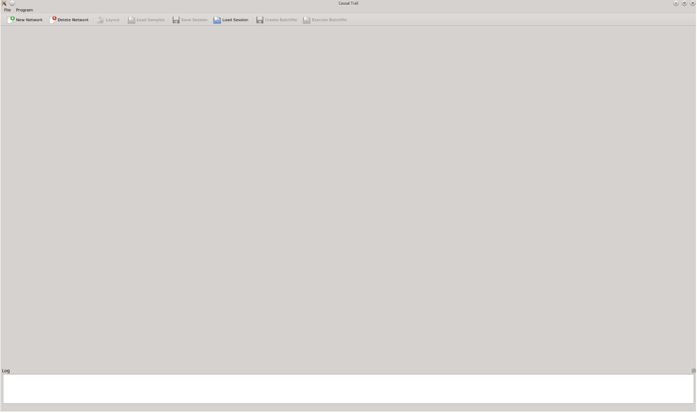
Networks can be loaded by a click on New Network in the toolbar or by clicking on File → New Network in the menu. Either actions open the dialogue shown in the left part of Figure 3. The dialogue shows tgf and na files only. If a na file is selected, another dialogue will pop up allowing to load the corresponding sif file, as shown in the right part of Figure 3.
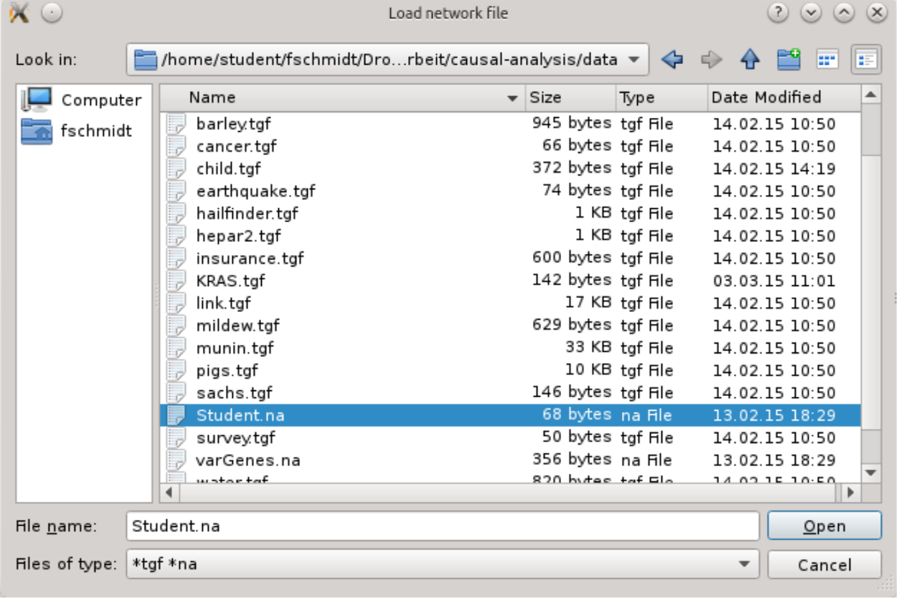
Upon successfully reading the network it is visualised using a force directed graph
layout. The network shown in Figure 4 is the Student Network presented in
Probabilistic Graphical Models from Koller and Friedman. Nodes can be
moved in the Network Visualisation widget. It is also possible to zoom
in our out of the view. The Log widget holds the path to the loaded files.
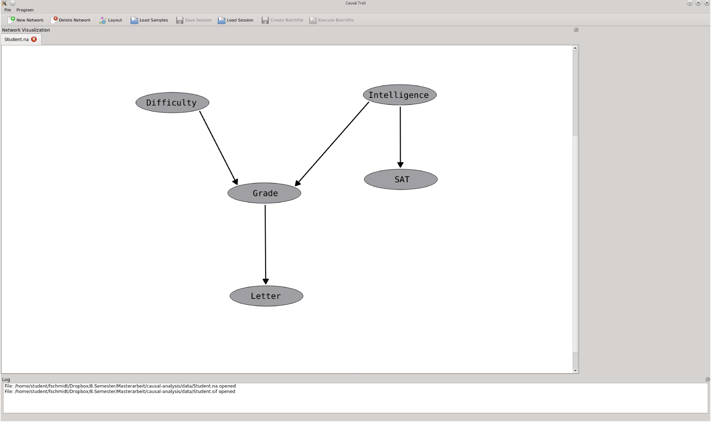
It is possible to layout the network again by clicking on Layout or by a click on File
→ Layout. As soon as a network is loaded, it is possible to load samples. This is
detailed in Section 4.2.
CausalTrail allows the user to load multiple networks. Loading another network
opens a new tab in the Network Visualisation widget. The user can switch
between loaded networks by clicking on the tabnames. The network that is currently
visualised can be deleted by clicking on Delete Network. Alternatively, it can be
deleted by clicking on File → Delete Network.
To load samples, at least one network has to be loaded beforehand. Samples can be
loaded by clicking on Load Samples, or by selecting File → Load Samples in the
menu. Samples are loaded for the network shown in the Network Visualisation
widget.
The aforementioned actions open the dialogue shown in Figure 5.
Samples have to be encoded in tab delimited txt files. The first column of the sample file contains the names of the features, which have be equivalent to the node names in the selected network. If there is no data provided for at least one node, the network can not be trained. The sample file must not contain column names. Upon selection of a file containing samples, the user is asked whether he wants to view the data or not. This is shown in Figure 6. Note that depending on the size of the dataset, it might take a few seconds till the window containing the data appears.
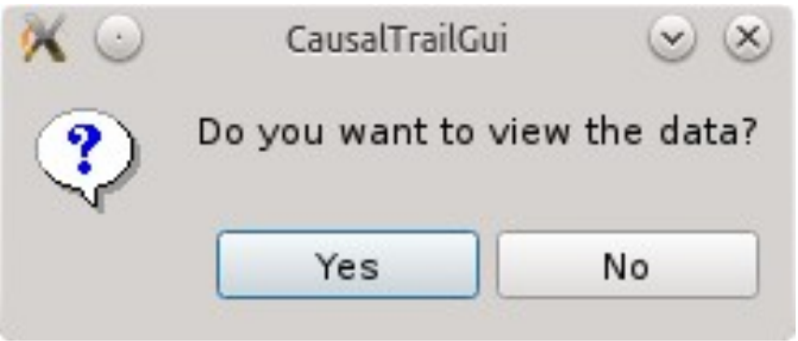
Visualising the data opens a new window, containing a table listing the samples of the specified file. As depicted in Figure 7, it is possible to exclude distinct samples from further usage.
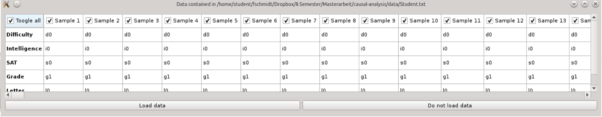
If the data selection is submitted, or the data was not viewed in the first place, the dialogue shown in Figure 8 appears.
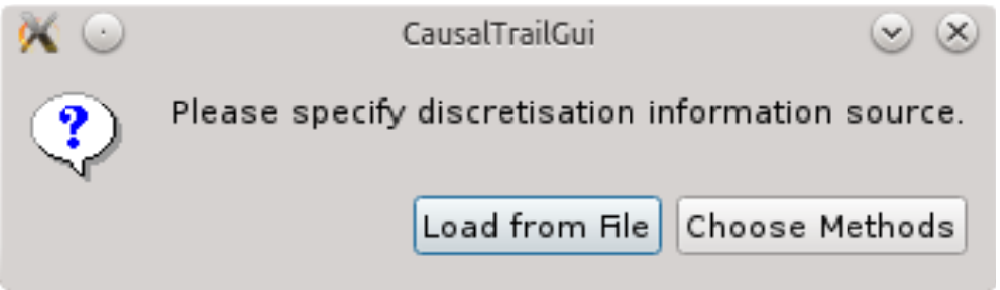
The discretisation information can be chosen by the user in the window depicted in Figure 9. Submitting the entered discretisation information creates a discretisation control file. It is a tab delimited file. Each of its rows contains a row number of the sample file and a discretisation method encoded by the integer code presented in Section 3.3.
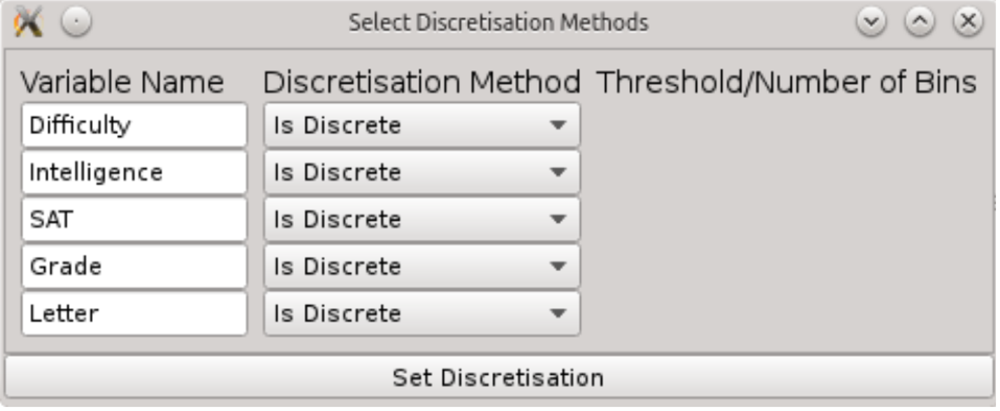
.
Once the data and the discretisation information are specified, the model is trained using an expectation maximisation algorithm. The GUI layout changes again, as it can be seen in Figure 10.
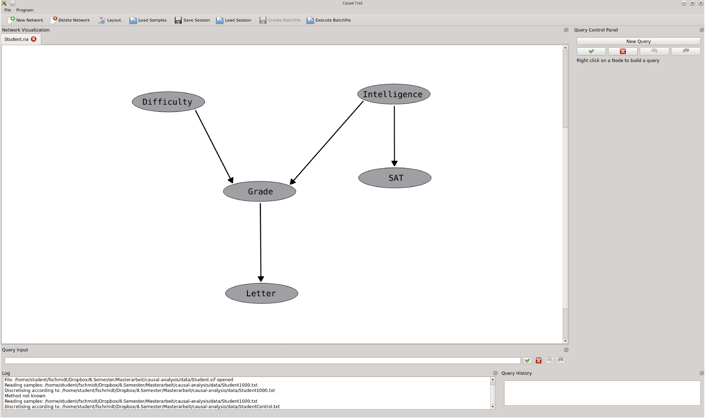
There are three new GUI elements. The box Query Input allows the user to enter a query, just like in the console version of CausalTrail. Submitted queries are stored in the Query History. The Query Control Panel allows an interactive query construction. The function of these elements are detailed in Section 4.5.
To simplify the usage of our tool and to avoid repeating the process of network and sample loading, CausalTrail supports sessions. A session in CausalTrail contains all currently trained networks, and submitted queries. To save a session, click on Save Session in the toolbar or click File → Save Session in the menu. The dialogue shown in the left part of Figure 11 appears. The user has to specify a CausalTrail Session File (cts). To load a stored session, choose Load Session in the toolbar or click File → Load Session in the menu. The right part of Figure 11 shows the dialogue to select a cts file. Loaded networks will be added to the current session of CausalTrail.
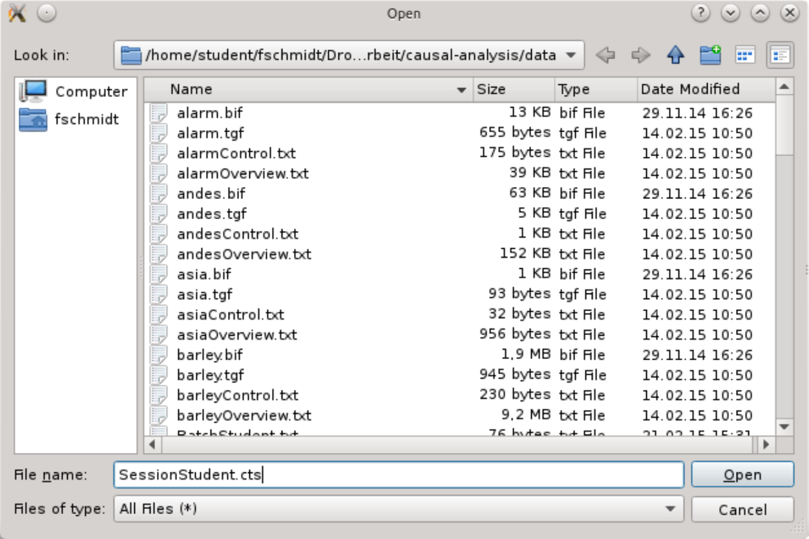
It is possible to view the conditional probability table (CPT) of a node. To view the table, right click on a node. Select Show CPT in the appearing context menu. A conditional probability table for the selected node pops up. Its name is given in the header of the window. Columns in the CPT with an italic label represent the parent nodes and their respective values. Values of the selected node are written in bold. Figure 12 shows an example for a CPT of node Grade in the Student network.
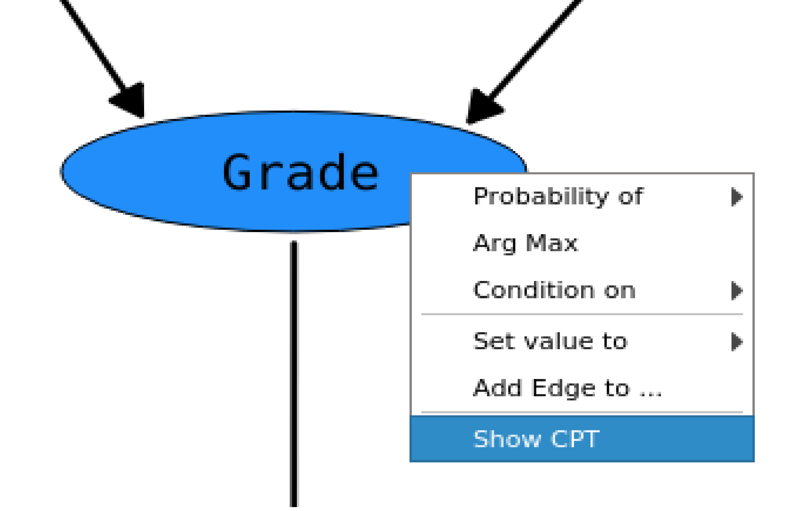
CausalTrail offers three ways to submit a query. A query can be
The following sections cover these options in detail.
The result of query is shown in the Log and in the Query Control Panel. Submitted
queries are listed in the Query History.
Queries can be entered directly using the Query Input widget. A query can be submitted by pressing Enter or by a click on the green tick. An example is shown in Figure 13.
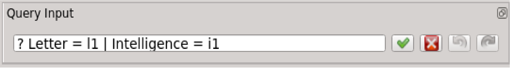
Entering queries directly requires the user to be familiar with our query language. As this can not be expected from the general user, CausalTrail allows an interactive query construction, introduced in the next section.
Queries can be built interactively by the user. This permits the user to formulate queries without learning our query language. To start building a query, the user has to move the mouse over a node that should be a part of the query. A right click opens a context menu, as shown in Figure 14.
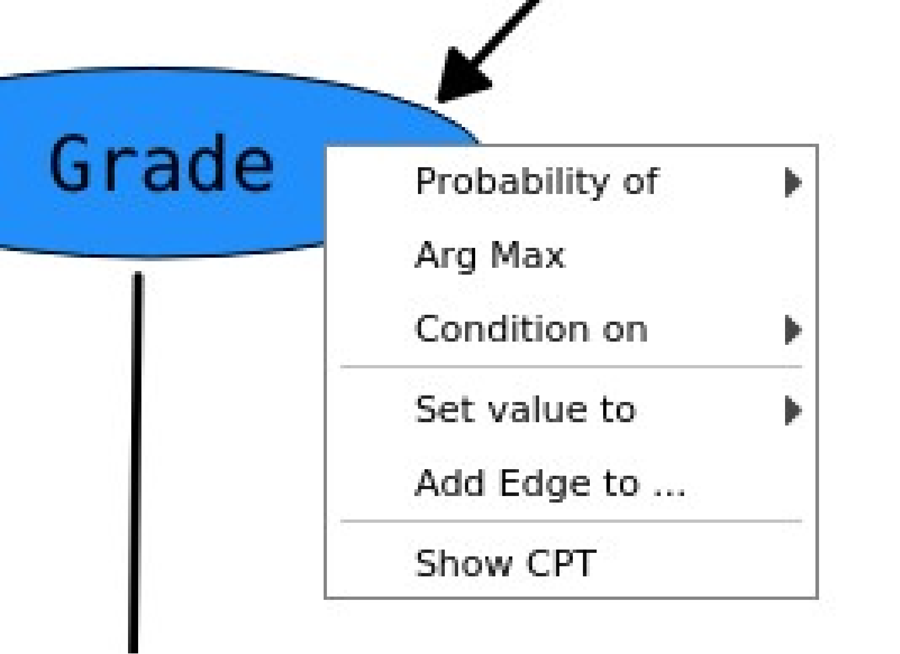
There are five options related to query construction:
Once an item is selected, it appears in the Query Control Panel. Double clicking on an
item in one the boxes in the Query Control Panel removes them from the current
query. A colour code simplifies the identification of different query elements. A
natural language wrapper around the query element boxes further facilitates the
understanding of the query.
In addition to the operations on nodes, there is an operation on edges. A right click
on an edge opens a context menu, as shown in Figure 14. Selecting Remove Edge
removes the selected edge. Removed edges, are shown in grey. The style of the edge is
changed from solid to dashed. As for adding an edge, removing one also triggers
retraining of the network. An example containing all types of actions, except the Arg
Max setting is shown in Figure 15.
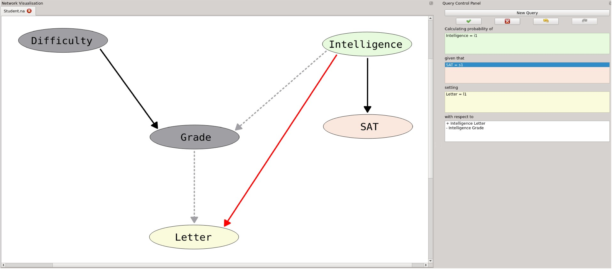
A query can be calculated either by clicking on the green tick in the Query Control Panel, or by pressing Enter. To enter a new query, the button New Query has to be clicked.
Queries are stored in the Query History. There are two ways to reload a query contained in the history.
The visualisation of the network and the Query Control Panel are adapted according to the selected query.
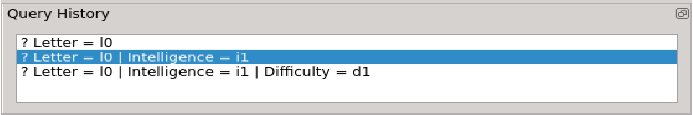
To allow the user to quickly process a set of queries with networks trained on different data, CausalTrail offers Query Batch Files. A batch file can be created by clicking on Create Batchfile. Queries currently shown in the Query History are written to the batchfile. A batchfile can be executed by a click on Execute Batchfile. Results are shown in the Log.
To illustrate the usage of CausalTrail further, we present a few example Queries in the Student Network.
In Figure 17 we show a query to compute the probability of Intelligence obtaining the value i1. Figure 18 shows a query including a condition. There, we compute the probability that Intelligence obtains the value i1, if Grade has the value g1 and SAT has the value s1.
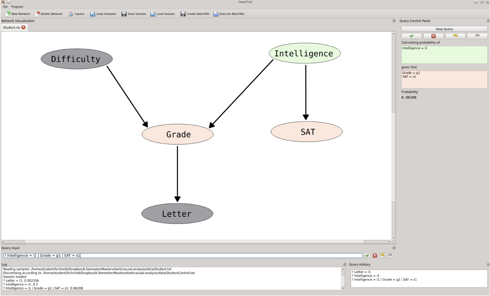
The query shown in Figure 19 contains a do-intervention. We compute the probability of Intelligence obtaining the value i1, given that SAT has the value s1 and we set the value of Grade to g1.
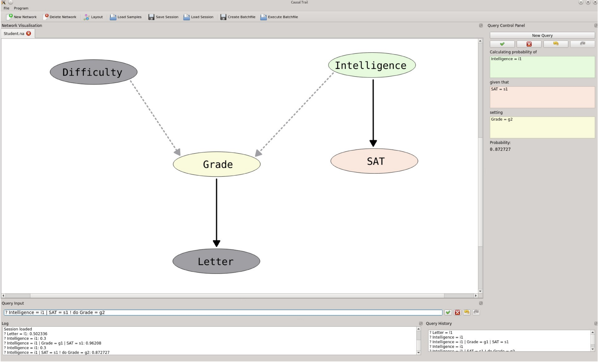
Figure 20 represents a counterfactual. We compute the probability to get a letter, if we have not received a letter before.